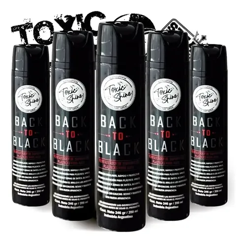

Toxic Shine - Cherry Quick Detailer

Cera rápida y abrillantador instantáneo con aroma a cereza para acabado final.
- Presentación: 600ml
- Precio: $12.500
Cera rápida y abrillantador instantáneo con aroma a cereza para acabado final.

Shampoo neutro de alta espuma, seguro para vehículos con sellados cerámicos.

Acondicionador para cubiertas y plásticos exteriores con efecto brillo mojado.

Removedor de partículas férricas para llantas y pintura con indicador de color.

Limpiador de cristales de evaporación rápida libre de marcas y vetas.

Cera en spray para colores oscuros que resalta la profundidad y disimula rayas finas.